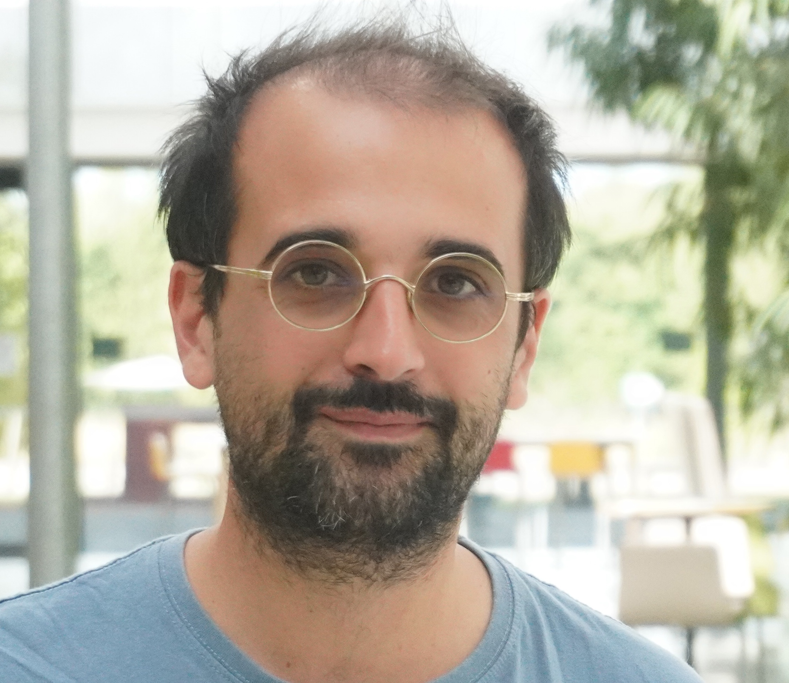

About
I am a research scientist (chargé de recherche) at Inria in the Grace project-team and part-time assistant professor at École Polytechnique. My main research interests are code- and lattice-based cryptography.


"Montagne Sainte-Victoire, Paul Cézanne."
Address:
École Polytechnique
91128 PALAISEAU CEDEX
Office 2047
E-mail: thomas.debris@inria.fr
Teaching
- Code-based Cryptography (lecture notes, work in progress)
- Introduction to quantum computer science and applications (INF587, École Polytechnique)
- Introduction to information theory (CSC_51063_EP, École Polytechnique)
- Advanced topics in quantum information and computing (CSC_51002_EP, École Polytechnique)
PhD Students
- Pierre Loisel (2023 -), co-advised with Alain Couvreur
- Maxime Bombar (2020 - 2023), defended on December 15, 2023, co-advised with Alain Couvreur
Scientific Activities
-
Principal Investigator:
• ERC-StG IQ-SCALe (Ironclad Quantum Security of Code- And Lattice-based cryptography): 2026–2031
• ANR JCJC COLA (COde- and LAttice-based cryptography): 2021–2025 - Program Committee Member: Eurocrypt 2025, PKC 2025, SAC 2025, CRYPTO 2025, PQCrypto2026
- Editorial Board Member: Designs, Codes and Cryptography
- Coordinator of the candidate scheme Wave for NIST Post-Quantum standardization (some slides)
Publications
- Worst and average case hardness of decoding via smoothing bounds PKC 2025
- New Solutions to Delsarte's Dual Linear Programs IEEE IT 2024
- Exploiting signature leakages: breaking Enhanced pqsigRM Isit 2024
- Quantum Oblivious LWE Sampling and Insecurity of Standard Model Lattice-Based SNARKs STOC 2024 ; [Slides]
- Reduction from sparse LPN to LPN, Dual Attack 3.0 Eurocrypt 2024
- Quantum reduction of finding short code vectors to the decoding problem IEEE IT 2023
- On the pseudorandomness of the decoding problem via the Oracle Comparison Problem Asiacrypt 2023
- Smoothing codes and lattices: systematic study and new bounds IEEE IT 2023
- Statistical Decoding 2.0: Reducing Decoding to LPN Asiacrypt 2022
- On codes and learning with errors over function fields Crypto 2022
- An algorithmic reduction theory for binary codes: LLL and more IEEE IT 2022 ; [Slides]
- Classical and quantum algorithms for generic Syndrome Decoding problems and applications to the Lee metric PQCrypto 2021
- Tight and optimal reductions for signatures based on average trapdoor preimage sampleable functions and applications to code-based signatures PKC 2020 ; [Slides]
- Wave: a new family of trapdoor one-way preimage sampleable functions based on codes Asiacrypt 2019 (Best Paper Award) ; [Slides]
- Ternary syndrome decoding with large weights SAC 2019
- Two attacks on rank metric code-based schemes: Ranksign and an identity-based-encryption scheme Asiacrypt 2018 ; [Slides]
- Statistical decoding Isit 2017 ; [Slides]
Preprints
- A Minrank-based encryption scheme à la Alekhnovich-Regev eprint.iacr.org 2025
- MIRANDA: short signatures from a leakage-free full-domain-hash scheme eprint.iacr.org 2025
- Wavelet: code-based postquantum signatures with fast verification on microcontrollers eprint.iacr.org 2021
- On the hardness of code equivalence problems in rank metric arXiv 2020
- About wave implementation and its leakage immunity eprint.iacr.org 2019
- The problem with the SURF scheme arXiv 2017
Manuscript
- PhD (in French), defended on December 17, 2019